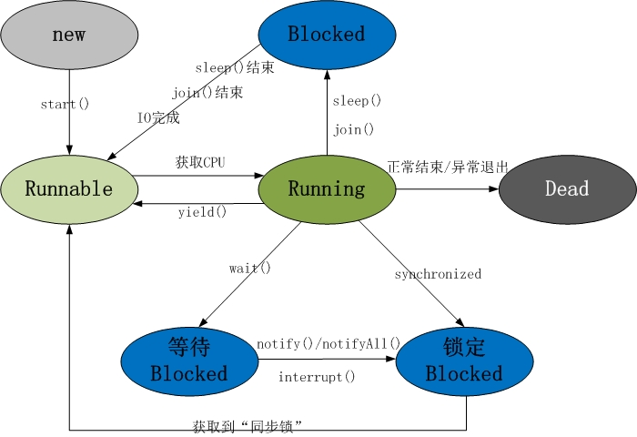

Programación multihilo en Java
Java proporciona soporte integrado para la programación multihilo. Un hilo se refiere a un flujo de control de un solo orden dentro de un proceso; un proceso puede ejecutar varios hilos de forma concurrente, y cada hilo ejecuta diferentes tareas en paralelo.
La programación multihilo es una forma especial de multitarea, pero utiliza una menor sobrecarga de recursos.
Aquí se define otro término relacionado con los hilos: proceso. Un proceso incluye el espacio de memoria asignado por el sistema operativo y contiene uno o más hilos. Un hilo no puede existir de forma independiente; debe ser parte de un proceso. Un proceso se ejecuta continuamente hasta que todos los hilos no demonio hayan terminado de ejecutarse.
La programación multihilo permite a los programadores escribir programas altamente eficientes para aprovechar al máximo la CPU.
Ciclo de vida de un hilo
Un hilo es un proceso de ejecución dinámico; también tiene un proceso que va desde su creación hasta su muerte.
La siguiente figura muestra el ciclo de vida completo de un hilo.

- Estado nuevo:
Usandonewla palabra clave yThreaddespués de crear un objeto de hilo con la clase o sus subclases, el objeto de hilo se encuentra en estado nuevo. Permanece en este estado hasta que el programastart()este hilo.
- Estado listo:
Cuando el objeto de hilo invoca el método start(), el hilo entra en el estado listo. Los hilos en estado listo se encuentran en la cola de listos y deben esperar la programación del planificador de hilos de la JVM.
- Estado en ejecución:
Si un hilo en estado listo obtiene recursos de CPU, puede ejecutarserun(), en ese momento el hilo se encuentra en estado de ejecución. El estado de ejecución es el más complejo; el hilo puede pasar a estado bloqueado, listo o muerto.
- Estado bloqueado:
Si un hilo ejecuta métodos como sleep (dormir), suspend (suspender) y otros, después de perder los recursos que ocupaba, el hilo pasa del estado de ejecución al estado bloqueado. Cuando termina el tiempo de suspensión u obtiene los recursos del dispositivo, puede volver al estado listo. Se puede dividir en tres tipos:
Bloqueo por espera: el hilo en estado de ejecución ejecuta el método wait(), lo que hace que el hilo entre en el estado de bloqueo por espera.
Bloqueo de sincronización: el hilo falla al obtener el bloqueo de sincronización synchronized (porque el bloqueo de sincronización está ocupado por otro hilo).
Otros bloqueos: cuando se emite una solicitud de E/S mediante la llamada a sleep() o join() del hilo, el hilo entra en estado bloqueado. Cuando el estado de sleep() expira, join() espera a que el hilo termine o expire el tiempo, o cuando el procesamiento de E/S finaliza, el hilo vuelve al estado listo.
- Estado muerto:
Cuando un hilo en estado de ejecución completa su tarea u ocurre otra condición de terminación, el hilo cambia al estado de terminación.
Prioridad de los hilos
Cada hilo de Java tiene una prioridad, lo que ayuda al sistema operativo a determinar el orden de planificación de los hilos.
La prioridad de un hilo de Java es un número entero, cuyo rango de valores es de 1 (Thread.MIN_PRIORITY) a 10 (Thread.MAX_PRIORITY).
De forma predeterminada, a cada hilo se le asigna una prioridad NORM_PRIORITY (5).
Los hilos con mayor prioridad son más importantes para el programa y deberían recibir recursos del procesador antes que los hilos de menor prioridad. Sin embargo, la prioridad de los hilos no garantiza el orden de ejecución y depende en gran medida de la plataforma.
Crear un hilo
Java ofrece tres métodos para crear hilos:
- Implementando la interfaz Runnable;
- Heredando de la propia clase Thread;
- Creando hilos mediante Callable y Future.
Crear un hilo implementando la interfaz Runnable
La forma más sencilla de crear un hilo es crear una clase que implemente la interfaz Runnable.
Para implementar Runnable, una clase solo necesita ejecutar una llamada al método run(), con la siguiente declaración:
Puedes sobrescribir este método; es importante entender que run() puede invocar otros métodos, usar otras clases y declarar variables, igual que el hilo principal.
Después de crear una clase que implemente la interfaz Runnable, puedes instanciar un objeto de hilo dentro de la clase.
Thread define varios constructores; el siguiente es el que usamos con frecuencia:
Aquí, threadOb es una instancia de una clase que implementa la interfaz Runnable, y threadName especifica el nombre del nuevo hilo.
Después de crear el nuevo hilo, solo se ejecutará cuando llames a su método start().
A continuación se muestra un ejemplo de cómo crear un hilo y comenzar a ejecutarlo:
Ejemplo
Compile el programa anterior; el resultado de la ejecución es el siguiente:
Creating Thread-1 Starting Thread-1 Creating Thread-2 Starting Thread-2 Running Thread-1 Thread: Thread-1, 4 Running Thread-2 Thread: Thread-2, 4 Thread: Thread-1, 3 Thread: Thread-2, 3 Thread: Thread-1, 2 Thread: Thread-2, 2 Thread: Thread-1, 1 Thread: Thread-2, 1 Thread Thread-1 exiting. Thread Thread-2 exiting.
Crear un hilo heredando de Thread
El segundo método para crear un hilo es crear una nueva clase que herede de la clase Thread y luego crear una instancia de esa clase.
La clase heredada debe sobrescribir el método run(), que es el punto de entrada del nuevo hilo. También debe llamar al método start() para poder ejecutarse.
Aunque este método se enumera como una forma de implementar multihilo, en esencia también es una instancia que implementa la interfaz Runnable.
Ejemplo
Compile el programa anterior; el resultado de la ejecución es el siguiente:
Creating Thread-1 Starting Thread-1 Creating Thread-2 Starting Thread-2 Running Thread-1 Thread: Thread-1, 4 Running Thread-2 Thread: Thread-2, 4 Thread: Thread-1, 3 Thread: Thread-2, 3 Thread: Thread-1, 2 Thread: Thread-2, 2 Thread: Thread-1, 1 Thread: Thread-2, 1 Thread Thread-1 exiting. Thread Thread-2 exiting.
Métodos de Thread
La siguiente tabla enumera algunos métodos importantes de la clase Thread:
| N.º | Descripción del método |
|---|---|
| 1 |
public void start() Hace que este hilo comience a ejecutarse;JavaLa máquina virtual invoca el método run de este hilo. |
| 2 |
public void run() Si el hilo se construyó con un objeto Runnable independiente, se invoca el método run de ese objeto Runnable; de lo contrario, el método no hace nada y retorna. |
| 3 |
public final void setName(String name) Cambia el nombre del hilo para que coincida con el parámetro name. |
| 4 |
public final void setPriority(int priority) Cambia la prioridad del hilo. |
| 5 |
public final void setDaemon(boolean on) Marca el hilo como hilo demonio o hilo de usuario. |
| 6 |
public final void join(long millisec) Espera como máximo millis milisegundos a que este hilo termine. |
| 7 |
public void interrupt() Interrumpe el hilo. |
| 8 |
public final boolean isAlive() Comprueba si el hilo está activo. |
Los métodos anteriores son invocados por objetos Thread; los métodos de la siguiente tabla son métodos estáticos de la clase Thread.
| N.º | Descripción del método |
|---|---|
| 1 |
public static void yield() Suspende el objeto de hilo que se está ejecutando actualmente y ejecuta otros hilos. |
| 2 |
public static void sleep(long millisec) Hace que el hilo actualmente en ejecución duerma (detenga la ejecución) durante el número especificado de milisegundos; esta operación se ve afectada por la precisión y exactitud del temporizador del sistema y del programador. |
| 3 |
public static boolean holdsLock(Object x) Devuelve true si y solo si el hilo actual mantiene el bloqueo de monitor sobre el objeto especificado. |
| 4 |
public static Thread currentThread() Devuelve una referencia al objeto de hilo que se está ejecutando actualmente. |
| 5 |
public static void dumpStack() Imprime la traza de pila del hilo actual en el flujo de error estándar. |
Ejemplo
El siguiente programa ThreadClassDemo demuestra algunos métodos de la clase Thread:
Código del archivo DisplayMessage.java:
Código del archivo GuessANumber.java:
Código del archivo ThreadClassDemo.java:
El resultado de la ejecución es el siguiente; cada ejecución produce un resultado diferente.
Starting hello thread... Starting goodbye thread... Hello Hello Hello Hello Hello Hello Goodbye Goodbye Goodbye Goodbye Goodbye .......
Crear hilos mediante Callable y Future
1. Crea una clase de implementación de la interfaz Callable e implementa el método call(). Este método call() actuará como el cuerpo de ejecución del hilo y tendrá un valor de retorno.
2. Crea una instancia de la clase de implementación de Callable y usa la clase FutureTask para envolver el objeto Callable. Este objeto FutureTask encapsula el valor de retorno del método call() del objeto Callable.
3. Usar el objeto FutureTask como target del objeto Thread para crear e iniciar un nuevo hilo.
4. Llamar al método get() del objeto FutureTask para obtener el valor de retorno después de que el hilo secundario termine su ejecución.
Ejemplo
Comparación de las tres formas de crear hilos
1. Al usar el enfoque de implementar las interfaces Runnable y Callable para crear múltiples hilos, la clase de hilo solo implementa la interfaz Runnable o Callable, y aún puede heredar de otras clases.
2. Al usar el enfoque de heredar la clase Thread para crear múltiples hilos, la escritura es simple. Si necesita acceder al hilo actual, no es necesario usar el método Thread.currentThread(), simplemente use this para obtener el hilo actual.
Algunos conceptos principales sobre hilos
En la programación con múltiples hilos, necesita comprender los siguientes conceptos:
- Sincronización de hilos
- Comunicación entre hilos
- Interbloqueo de hilos
- Control de hilos: suspensión, detención y reanudación
Uso de la programación multihilo
La clave para utilizar eficazmente múltiples hilos es comprender que los programas se ejecutan de forma concurrente y no secuencial. Por ejemplo: si el programa tiene dos subsistemas que necesitan ejecutarse concurrentemente, entonces es necesario utilizar programación con múltiples hilos.
Mediante el uso de múltiples hilos, se pueden escribir programas muy eficientes. Sin embargo, tenga en cuenta que si crea demasiados hilos, la eficiencia de ejecución del programa en realidad disminuye, no aumenta.
Recuerde que la sobrecarga del cambio de contexto también es importante. Si crea demasiados hilos, ¡el tiempo que la CPU dedica al cambio de contexto será mayor que el tiempo de ejecución del programa!
Otras extensiones
dg5uw
159***75112@139.com
Pool de hilos
1. El pool de hilos es, en realidad, un contenedor que alberga múltiples hilos. Los hilos en él se pueden reutilizar repetidamente, eliminando la operación de crear objetos de hilo con frecuencia y evitando consumir demasiados recursos al crear hilos repetidamente. (Qué es)
2. Entonces, ¿por qué necesitamos usar un pool de hilos? ¿No se pueden crear manualmente cada vez que se necesiten?
En Java, si se crea un nuevo hilo por cada solicitud que llega, el costo es considerable. En el uso real, el tiempo y los recursos del sistema que se consumen al crear y destruir hilos son bastante grandes, posiblemente incluso mucho mayores que el tiempo y los recursos dedicados a procesar las solicitudes reales de los usuarios. Además del costo de crear y destruir hilos, los hilos activos también consumen recursos del sistema. Si se crean demasiados hilos en una JVM, el sistema puede sufrir una escasez de recursos debido al consumo excesivo de memoria o al "exceso de conmutación". Para prevenir la escasez de recursos, se deben tomar medidas para limitar el número de solicitudes procesadas en un momento dado, minimizar la cantidad de creaciones y destrucciones de hilos, especialmente de aquellos cuya creación y destrucción consumen muchos recursos, y tratar de utilizar objetos existentes para brindar servicio. (Por qué)
El pool de hilos se utiliza principalmente para resolver el problema de la sobrecarga del ciclo de vida de los hilos y el problema de recursos insuficientes. Al reutilizar hilos para múltiples tareas, el costo de creación de hilos se distribuye entre múltiples tareas. Además, como el hilo ya existe cuando llega la solicitud, se elimina el retraso causado por la creación del hilo. De esta manera, se puede atender la solicitud de inmediato, haciendo que la aplicación responda más rápido. Por otro lado, ajustando adecuadamente el número de hilos en el pool se puede prevenir la escasez de recursos. (Para qué sirve)
3. El pool de hilos se crea a través de la fábrica de pools de hilos, luego se llama a métodos del pool de hilos para obtener hilos, y luego se utilizan los hilos para ejecutar métodos de tareas.
4. Aquí se presentan dos métodos para crear hilos usando un pool de hilos.
1) Usar la interfaz Runnable para crear un pool de hilos.
Pasos para usar los objetos hilo del pool de hilos:
Test.javaEl código es el siguiente:
import java.util.concurrent.ExecutorService; import java.util.concurrent.Executors; public class Test { public static void main(String[] args) { //创建线程池对象 参数5，代表有5个线程的线程池 ExecutorService service = Executors.newFixedThreadPool(5); //创建Runnable线程任务对象 TaskRunnable task = new TaskRunnable(); //从线程池中获取线程对象 service.submit(task); System.out.println("----------------------"); //再获取一个线程对象 service.submit(task); //关闭线程池 service.shutdown(); } }TaskRunnable.java El archivo de interfaz es el siguiente:
public class TaskRunnable implements Runnable{ @Override public void run() { for (int i = 0; i < 1000; i++) { System.out.println("自定义线程任务在执行"+i); } } }2) Usar la interfaz Callable para crear un pool de hilos.
Interfaz Callable: similar en funcionalidad a la interfaz Runnable, se utiliza para especificar la tarea del hilo. Su método call() se usa para devolver el resultado después de que la tarea del hilo se ejecute; el método call puede lanzar excepciones.
ExecutorService: Clase del pool de hilos
<T> Future<T> submit(Callable<T> task): Obtiene un objeto hilo del pool de hilos y ejecuta el método call() del hilo
Interfaz Future: Se utiliza para registrar el resultado producido después de que la tarea del hilo se ejecuta por completo. Creación y uso del pool de hilos.
Pasos para usar los objetos hilo del pool de hilos:
El código de Test.java es el siguiente:
import java.util.concurrent.ExecutorService; import java.util.concurrent.Executors; public class Test{ public static void main(String[] args) { ExecutorService service = Executors.newFixedThreadPool(3); TaskCallable c = new TaskCallable(); //线程池中获取线程对象，调用run方法 service.submit(c); //再获取一个 service.submit(c); //关闭线程池 service.shutdown(); } }TaskCallable.java El archivo de interfaz es el siguiente:
import java.util.concurrent.Callable; public class TaskCallable implements Callable<Object>{ @Override public Object call() throws Exception { for (int i = 0; i < 1000; i++) { System.out.println("自定义线程任务在执行"+i); } return null; } }dg5uw
159***75112@139.com
dg5uw
159***75112@139.com
Ejercicio de pool de hilos: devolver el resultado de sumar dos números.
Requisito: a través del objeto hilo del pool de hilos, usar la interfaz Callable para completar la operación de sumar dos números.
Interfaz Future: Se utiliza para registrar el resultado producido después de que la tarea del hilo se ejecuta por completo.
Creación y uso del pool de hilos: get() obtiene el resultado de datos encapsulado en el objeto Future.
El código del archivo ThreadPoolDemo.java es el siguiente:
import java.util.concurrent.ExecutionException; import java.util.concurrent.ExecutorService; import java.util.concurrent.Executors; import java.util.concurrent.Future; public class ThreadPoolDemo { public static void main(String[] args) throws InterruptedException, ExecutionException { //创建线程池对象 ExecutorService threadPool = Executors.newFixedThreadPool(2); //创建一个Callable接口子类对象 //MyCallable c = new MyCallable(); MyCallable c = new MyCallable(100, 200); MyCallable c2 = new MyCallable(10, 20); //获取线程池中的线程，调用Callable接口子类对象中的call()方法, 完成求和操作 //<Integer> Future<Integer> submit(Callable<Integer> task) // Future 结果对象 Future<Integer> result = threadPool.submit(c); //此 Future 的 get 方法所返回的结果类型 Integer sum = result.get(); System.out.println("sum=" + sum); //再演示 result = threadPool.submit(c2); sum = result.get(); System.out.println("sum=" + sum); //关闭线程池(可以不关闭) } }El código del archivo de interfaz MyCallable.java es el siguiente:
import java.util.concurrent.Callable; public class MyCallable implements Callable<Integer> { //成员变量 int x = 5; int y = 3; //构造方法 public MyCallable(){ } public MyCallable(int x, int y){ this.x = x; this.y = y; } @Override public Integer call() throws Exception { return x+y; } }dg5uw
159***75112@139.com
0℃space
960***125@qq.com
Diferencias entre proceso y hilo
Proceso
Instancia de ejecución de una aplicación, con espacio de memoria y recursos de sistema independientes.
Hilo
Unidad básica de programación y asignación de la CPU, unidad mínima de ejecución de operaciones dentro de un proceso; puede completar un flujo de control secuencial independiente.
Relación entre procesos e hilos
(1) Un hilo solo puede pertenecer a un proceso, mientras que un proceso puede tener múltiples hilos, pero al menos uno. El hilo es la unidad mínima de ejecución y programación que el sistema operativo puede reconocer.
(2) Los recursos se asignan a los procesos; todos los hilos del mismo proceso comparten todos los recursos de ese proceso. Los múltiples hilos del mismo proceso comparten el segmento de código (código y constantes), el segmento de datos (variables globales y estáticas) y el segmento extendido (almacenamiento en heap). Sin embargo, cada hilo tiene su propio segmento de pila, también llamado segmento de tiempo de ejecución, que se utiliza para almacenar todas las variables locales y temporales.
(3) El procesador se asigna a los hilos; es decir, lo que realmente se ejecuta en el procesador son los hilos.
(4) Durante la ejecución, los hilos necesitan sincronizarse mediante cooperación. Los hilos de diferentes procesos deben utilizar mecanismos de comunicación por mensajes para lograr la sincronización.
0℃space
960***125@qq.com
A Ying
553***793@qq.com
Dirección de referencia
Diferencia entre run() y start() en Java Thread
Los hilos en Java se implementan mediante la clase java.lang.Thread. Cuando la VM se inicia, hay un hilo definido por el método principal. Se pueden crear nuevos hilos creando instancias de Thread. Cada hilo completa sus operaciones mediante el método run() correspondiente a un objeto Thread específico; al método run() se le llama cuerpo del hilo. Un hilo se inicia mediante el método start() de la clase Thread.
En Java, los hilos generalmente tienen cinco estados: creación, listo, en ejecución, bloqueado y muerto.
Hay dos métodos para implementar e iniciar hilos.
Principio del multihilo:Es como jugar a una consola: solo hay una consola (CPU), pero mucha gente quiere jugar. Entonces, ¡start() es hacer cola! Cuando la CPU te selecciona, es tu turno y ejecutas run(). Cuando se agota el intervalo de tiempo (time slice) de la CPU, este hilo vuelve a hacer cola y espera al siguiente run().
Después de llamar a start(), el hilo se coloca en la cola de espera, a la espera de la programación de la CPU. No necesariamente comienza a ejecutarse de inmediato; simplemente coloca el hilo en estado ejecutable. Luego, a través de la JVM, el hilo Thread llamará al método run() para ejecutar el cuerpo del hilo. Primero se llama a start y luego a run, ¿por qué tanta molestia para no llamar directamente a run? Precisamente para lograr las ventajas del multihilo; sin start no es posible.
Recuerda:El multihilo consiste en utilizar la CPU por turnos (time-sharing), logrando que, a nivel macro, todos los hilos se ejecuten a la vez; también se denomina concurrencia.
public class Test { public static void main(String[] args) { Runner1 runner1 = new Runner1(); Runner2 runner2 = new Runner2(); // Thread(Runnable target) 分配新的 Thread 对象。 Thread thread1 = new Thread(runner1); Thread thread2 = new Thread(runner2); // thread1.start(); // thread2.start(); thread1.run(); thread2.run(); } } class Runner1 implements Runnable { // 实现了Runnable接口，jdk就知道这个类是一个线程 public void run() { for (int i = 0; i < 100; i++) { System.out.println("进入Runner1运行状态——————————" + i); } } } class Runner2 implements Runnable { // 实现了Runnable接口，jdk就知道这个类是一个线程 public void run() { for (int i = 0; i < 100; i++) { System.out.println("进入Runner2运行状态==========" + i); } } }A Ying
553***793@qq.com
Dirección de referencia
HelloWorld
zhy***@qq.com
Dirección de referencia
Diagrama de estados del hilo:

Los hilos incluyen los siguientes 5 estados:1. Estado nuevo (New):Una vez creado el objeto hilo, este entra en el estado nuevo. Por ejemplo: Thread thread = new Thread();
2. Estado listo (Runnable):También se le llama "estado ejecutable". Después de que se crea el objeto hilo, otros hilos llaman al método start() de dicho objeto para iniciar ese hilo. Por ejemplo: thread.start(). Un hilo en estado listo puede ser programado y ejecutado por la CPU en cualquier momento.
3. Estado en ejecución (Running):El hilo obtiene el permiso de la CPU para ejecutarse. Cabe señalar que un hilo solo puede pasar del estado listo al estado en ejecución.
4. Estado bloqueado (Blocked):El estado bloqueado es cuando el hilo renuncia al uso de la CPU por alguna razón y detiene temporalmente su ejecución. Solo cuando el hilo entra en estado listo tiene la oportunidad de volver al estado en ejecución. El bloqueo se divide en tres casos:
5. Estado de muerte (Dead):El hilo finaliza su ciclo de vida cuando termina su ejecución o sale del método run() debido a una excepción.
HelloWorld
zhy***@qq.com
Dirección de referencia
cz
109***3594@qq.com
Problemas de seguridad de hilos
Causas:Varios hilos compiten por el mismo recurso (acceden a los mismos datos); se puede consultar el clásico problema del productor-consumidor.
Soluciones:
Dentro del método run: bloque de código sincronizado. synchronized {}
Public synchronized 返回值类型 方法名（）{} 自动释放对象锁Usar el bloqueo Lock
El bloqueo Lock debe ser liberado manualmente por el programador (dentro del bloque finally).
La implementación de Lock proporciona operaciones de bloqueo más amplias que las que se pueden obtener con métodos y sentencias synchronized. Apareció después de JDK 1.5.
Métodos de la interfaz Lock:
Clases de implementación de la interfaz Lock:
Pasos de uso:
public class RunnableImpl implements Runnable{ //定义一个共享的票源 private int ticket = 100; //1.在成员位置创建一个ReentrantLock对象 Lock l = new ReentrantLock(); //设置线程任务:卖票 @Override public void run() { //使用死循环,让卖票重复的执行 while(true){ //2.在可能出现线程安全问题的代码前,调用Lock接口中的方法lock获取锁对象 l.lock(); //判断票是否大于0 if(ticket>0){ //为了提高线程安全问题出现的几率,让程序睡眠10毫秒 try { //可能会产生异常的代码 Thread.sleep(10); //进行卖票 ticket-- System.out.println(Thread.currentThread().getName()+"正在卖第"+ticket+"张票!"); ticket--; } catch (InterruptedException e) { //异常的处理逻辑 e.printStackTrace(); }finally { //一定会执行的代码,一般用于资源释放(资源回收) //3.在可能出现线程安全问题的代码后,调用Lock接口中的方法unlock释放锁对象 l.unlock();//无论程序是否有异常,都让锁对象释放掉,节约内存,提高程序的效率 } } } } }cz
109***3594@qq.com
我v成为v我v成为
201***6216@qq.com
Usar CompletableFuture para resolver el problema de las devoluciones de llamada (callbacks).
import java.util.concurrent.CompletableFuture; import java.util.concurrent.CountDownLatch; public class CompletableFutureDemo { public static void main(String[] args) throws InterruptedException { long l = System.currentTimeMillis(); CompletableFuture<Integer> completableFuture = CompletableFuture.supplyAsync(() -> { System.out.println("执行耗时操作..."); timeConsumingOperation(); return 100; }); completableFuture.whenComplete((result, e) -> { System.out.println("结果：" + result); }); System.out.println("主线程运算耗时:" + (System.currentTimeMillis() - l) + " ms"); new CountDownLatch(1).await(); } static void timeConsumingOperation() { try { Thread.sleep(3000); } catch (Exception e) { e.printStackTrace(); } } }Salida de consola:
Se puede observar que la operación que consume tiempo no ocupa el intervalo de tiempo (time slice) del hilo principal, logrando el efecto de una llamada asíncrona. Tampoco necesitamos introducir ninguna dependencia de terceros; todo esto depende de la aparición de java.util.concurrent.CompletableFuture. CompletableFuture proporciona más de 50 métodos, lo que facilita enormemente las operaciones de multihilo en Java y la escritura de llamadas asíncronas.
我v成为v我v成为
201***6216@qq.com
八云式
139***2520@qq.com
Dirección de referencia
Sobre el multihilo en Java, aquí añado una nota sobre los métodos de hilo de la clase Object.
notify(): notifica a un hilo que está esperando en el objeto para que regrese de wait(); la premisa para que regrese es que el hilo haya obtenido el bloqueo del objeto.
notifyAll(): notifica a todos los hilos que están esperando en ese objeto.
wait(): el hilo que llama a este método entra en estado WAITING; solo regresa cuando espera la notificación de otro hilo o es interrumpido. Cabe señalar que,
después de llamar al método wait(), se libera el bloqueo del objeto.
wait(long): espera con tiempo de espera durante un período; el parámetro aquí está en milisegundos, es decir, espera hasta n milisegundos. Si no hay notificación, regresa por tiempo de espera.
wait(long, int): para un control más granular del tiempo de espera, puede alcanzar el nivel de milisegundos.
八云式
139***2520@qq.com
Dirección de referencia